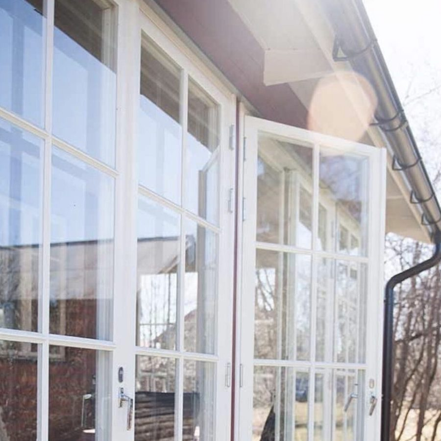
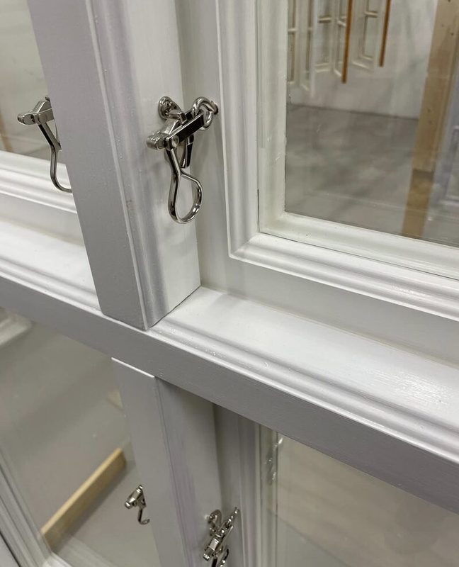
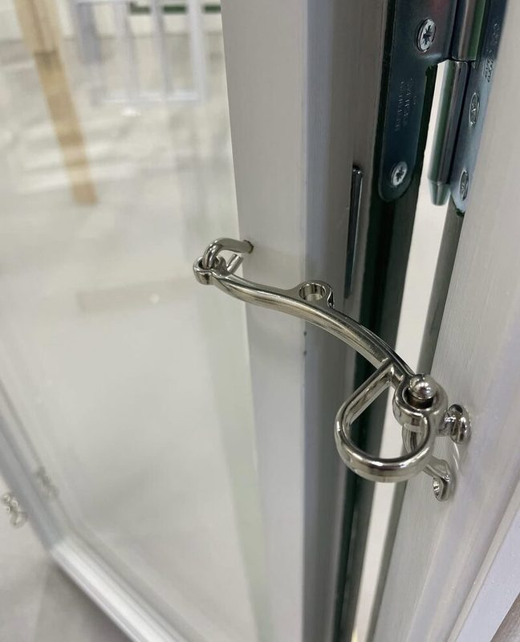

Kulturfönster

Behöver du nya fönster till ditt hus? För dig som vill bevara husets karaktär tillverkar jag fönster med traditionella profiler, kittad spröjs och linoljefärg. Jag säljer också färdiga fönster från etablerade tillverkare i gammal stil — hör av dig så hittar vi rätt lösning för just ditt hus.
Fönster i gammal stil
Mina träfönster har vackra profiler och äkta kittad spröjs. Oavsett om du bygger nytt, gör en tillbyggnad eller bara behöver byta ut något enstaka fönster så kan jag hjälpa dig. Profilerna följer den svenska byggnadstraditionen och passar allt från äldre timmerhus till nybyggda hus där man vill ha det traditionella uttrycket.
Beställning
När du kontaktar mig är det bra om du kan beskriva fönstret så specifikt som möjligt — till exempel antal lufter, spröjsindelning, mått, färg och om det ska vara kopplade fönster eller enkelbåge. Har du en skiss, fönsteruppställning eller ett foto är det mycket värdefullt. Är du osäker går det också bra — då hjälper jag dig komma fram till rätt lösning.
Detaljer och beslag
Beslagen är en viktig del av fönstret — de ska fungera felfritt och hålla länge. Jag använder traditionella förnicklade beslag som passar fönstrets karaktär.

